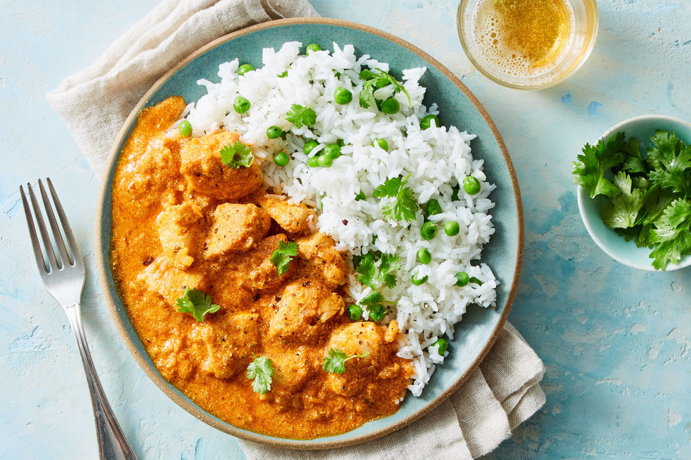
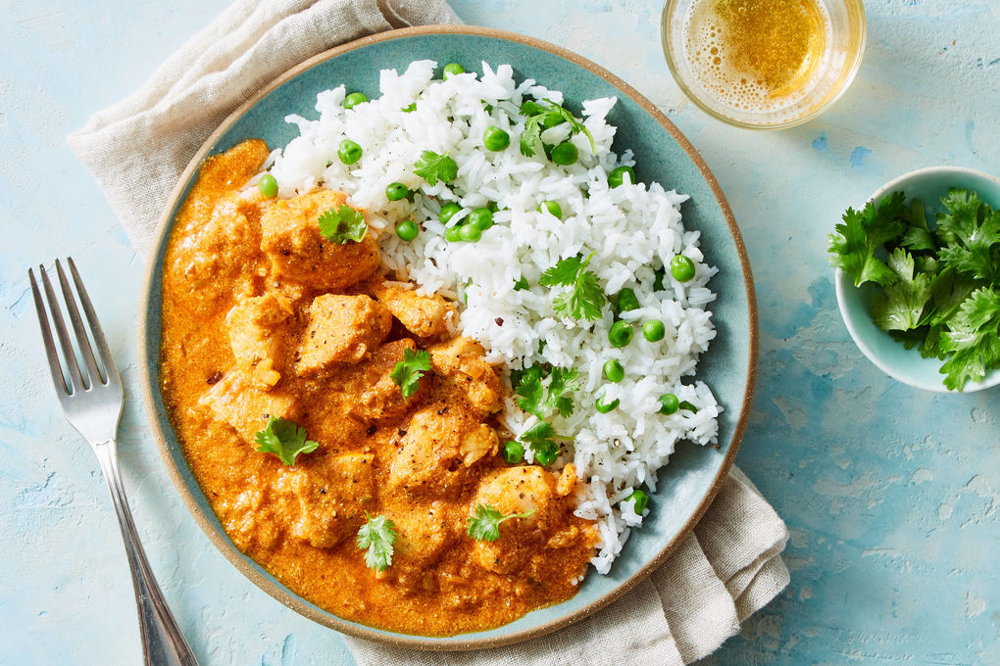

India is a vibrant, diverse and beautiful country with a
rich cultural heritage and a long and captivating history.
It is the seventh largest country by area,
the second most populous country in the world
with over 1.2 billion people and home to some of
the oldest civilizations in the world. India is a
melting pot of different cultures, religions and
languages, making it one of the most diverse countries
in the world. India is one of the fastest growing economies
in the world and is home to some of the world’s most competitive
and innovative businesses. The country is also making great strides
in technology and science, making it a global leader in many fields.
India is a land of many wonders, both natural and man-made.
From the majestic Himalayan mountains to the stunning temples
of Khajuraho, India has something to offer everyone.
It is also home to some of the world’s most beautiful beaches,
wildlife sanctuaries and national parks that are perfect for a holiday.
India is a unique and fascinating country that has something to
offer everyone.
Indian cuisine is known for its bold flavors,
intricate spices, and diverse range of dishes.
With over 30 different regions in India, each with
their own unique culinary traditions, Indian cuisine
offers a wide variety of dishes to suit every palate.
From the creamy and aromatic curries of the north to the
spicy and tangy seafood dishes of the south,
there is something for everyone in Indian cuisine.
One of the key features of Indian cuisine is its use of spices.
Whether it's cumin, coriander, turmeric or cardamom, these spices
are used in varying combinations to create complex and delicious flavors.
Additionally, Indian cuisine also features a wide range of vegetarian and
vegan options that are both healthy and tasty.
At its core, Indian cuisine is about bringing people together through food.
It's about sharing meals with family and friends and celebrating the rich
cultural heritage of India. So whether you're a seasoned fan or new to the
cuisine, there's no better time to explore all that Indian cuisine has to
offer.